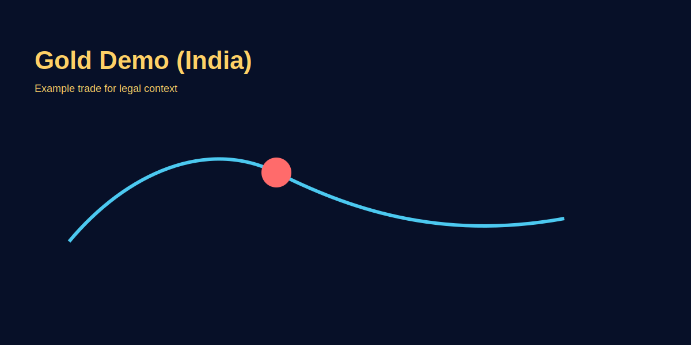

Is Forex Trading Legal in India?
Problem-based introduction
Naye traders aksar puchte hain: "Kya forex trading India mein legal hai?" Confusion natural hai—information mixed hai, offshore brokers available hain, aur regulations thoda technical lagte hain. Is article mein hum clear, simple Hinglish mein samjhayenge kya allowed hai, kya nahi, kaise safe way se seekhen aur practise karein, aur GOLD (XAU/USD) ka example de kar practical steps batayenge.
Step-by-step explanation
- Understand the law: In India, trading in foreign exchange is regulated by FEMA (Foreign Exchange Management Act) and RBI rules. Retail onshore forex trading for capital gains is restricted to currency derivatives on recognized exchanges.
- What individuals can do: Indians can trade currency derivatives on NSE/BSE/MCX- SX that are regulated, and also trade gold derivatives (MCX) onshore. Offshore forex trading with overseas brokers is done by many, but it carries regulatory, tax, and repatriation risks.
- Demo & learning: Use demo accounts provided by brokers to practice. Demo trading of GOLD (XAU/USD) is allowed and recommended for learning execution, risk rules, and psychology.
- Choose regulated venues: Prefer onshore exchanges for currency and commodity derivatives. If using international brokers, understand the legal and tax implications first.
Real trading logic (GOLD example)
Suppose you want to practice a simple GOLD trade on demo before considering live trading via regulated brokers that offer gold derivatives. Steps:
- Open a demo account with a broker or use MCX simulator for gold derivatives.
- Identify a trade: XAU/USD at 1950.00 on demo. Decide entry, stop, and target on a risk-based approach (risk 0.5–1% per trade).
- Record the trade in a journal: reason, time, screenshots (image placeholders in this article), outcome.
Compliance checklist (India)
- Use regulated onshore exchanges (NSE/BSE/MCX) for currency/commodity derivatives to stay fully compliant.
- If exploring international brokers, read FEMA/RBI guidelines; understand LRS limits, tax, and repatriation rules.
- Always complete KYC; avoid anonymous accounts that may block withdrawals.
- Consult a CA/financial professional for tax treatment of derivatives and forex gains.
Demo-to-live path
- 3–4 weeks demo on XAU/USD and INR pairs; focus on execution + journal.
- Move to micro-lot live on regulated venues; risk 0.25%–0.5% per trade.
- Review monthly: slippage, spread, tax implications; adjust size slowly.
Goal: compliance-first, risk-first. Speed se zyada survival and legality important hai.
Document checklist before funding
- PAN, Aadhaar, address proof, bank proof ready for KYC.
- For offshore, confirm withdrawal routes (wire/UPI/e-wallet) and fees.
- Check contract specs: margin, leverage caps, gold swap rates, trading hours.
Image-based examples (mandatory)
Example: annotated demo-chart showing entry and stop for GOLD. (Replace with production screenshot.)
Risk controls within Indian context
- Position sizing: keep per-trade risk small (0.25%–0.5%).
- Event risk: avoid trading during major RBI/US Fed announcements without plan.
- Tax tracking: maintain journal + P&L logs for filings.
- Broker risk: test small withdrawals monthly to ensure operational reliability.
FAQs (regulatory focus, concise)
- Offshore CFD trading legal hai?
- A: Mixed opinions; FEMA/RBI restrictions apply. Safest path is onshore regulated exchanges.
- LRS limit kaise apply hota hai?
- A: Liberalised Remittance Scheme caps annual outward remittance; consult your bank/CA before funding offshore accounts.
- MCX gold vs XAU/USD CFD difference?
- A: MCX is exchange-traded, regulated, INR-settled; CFD is broker-issued, USD-settled, with counterparty risk.
Common Mistakes
FEMA Act and RBI Regulations Deep-Dive
FEMA (Foreign Exchange Management Act, 1999) India mein foreign exchange transactions govern karta hai. RBI (Reserve Bank of India) is responsible authority hai. Saphal trading ke liye basic understanding zaroori hai:
- Current Account Liberalization: Indians freely USD/GBP/EUR exchange kar sakte hain within current account limits (typically travel, education, medical). But derivatives trading and capital gains par separate rules laagu hote hain.
- Capital Account Restrictions: Direct forex trading on offshore brokers for capital appreciation is technically restricted under traditional FEMA interpretation. However, RBI lately more flexible ho gaya hai specific cases mein.
- LRS (Liberalised Remittance Scheme): Each resident individual can remit up to USD 250,000 per financial year for permitted current or capital account transactions. Agar aap offshore broker par funding karna chahte ho, yeh limit consider karo, aur tax reporting mandatory hai.
- Exchange-traded options: NSE/BSE/MCX-SX par regulated currency derivatives trading fully legal hai. Options, futures, both allowed. This is safest legal way for Indian traders.
Practical implication: Agar aap compliance-first mindset maintain karte ho, NSE derivatives se start karo (EUR-INR, GBP-INR futures/options). MCX gold derivatives bhi legal aur fully compliant hain. Offshore brokers se baatein complicated ho jati hain tax aur repatriation side se.
Onshore vs Offshore: Risk & Compliance Comparison
Onshore aur offshore trading dono different risk profiles aur regulatory status maintain karte hain:
| Aspect | Onshore (NSE/MCX-SX) | Offshore (Int'l Brokers) |
|---|---|---|
| Regulation | SEBI/RBI regulated; central clearing | Jurisdiction-dependent; no Indian oversight |
| Instruments | Futures, Options on USD/EUR/GBP-INR; GOLD, Silver | Forex spot, CFDs, commodities via broker |
| Settlement | Rupees (INR); direct bank transfer | USD/broker currency; wire/e-wallet complications |
| Leverage | Capped at 1:20 typically; risk-controlled | 1:100+ possible; higher blowup risk |
| Tax Reporting | 1099-equivalent (Form 67) simple; broker provides | Complex; manual declaration required; CA guidance needed |
| Withdrawal Risk | Minimal; bank account direct | High; account freezes possible if compliance unclear |
Recommendation: Compliance se first 6-12 months, onshore exchanges par practice aur live trading do. Once profitable aur rule-aware ho jaao, tab decide karo offshore expansion ke baare mein.
Tax Treatment of Trading Profits in India
Trading profits India mein business income manli jati hain, subject se income tax aur additional compliance:
- Income Category: Futures/options/forex trading profits "Income from Other Sources" (Section 56) or "Business Income" (Section 28-44) mein come karte hain depending on frequency aur volume. High-frequency traders "business" category mein aa sakte hain.
- Tax rate: Typically slab rates laagu hote hain (10-30% depending on total income). Plus surcharge aur cess. Example: agar aapki trading profit Rs. 5 lakh hai aur slab 20% hai, tax payment ~Rs. 1 lakh hona chahiye.
- Loss Carryforward: Trading losses 8 financial years forward carry-over kar sakte ho. Agar Year 1 loss hai, future profits se offset kar sakte ho.
- Expense Deductibility: Trading-related software, education, internet—legitimate expenses deduct kar sakte ho. Tracking mandatory hai.
- Documentation: Trading journal, monthly statements, broker reports—all required for Income Tax scrutiny. Audits ho sakte hain agar pattern suspicious lag jaye.
Action: Ek CA appoint karo jab live trading start karo. Tax planning mein chota investment, long-term survival mein huge returns (penalties avoid karo).
Safe Broker Selection Checklist for Indian Traders
Broker select karte time kya check karna chahiye:
- Regulatory status: NSE/MCX-SX membership confirmed? Or international: FCA (UK), ASIC (Australia), CFTC (US) regulated?
- Segregated client funds: Broker aapke paise client trust account mein rakhe ya aapne account mein? Segregation protection deta hai company failure mein.
- Repatriation clarity: Withdrawal process clear hai? Wire transfers, timelines, minimum withdrawal amounts ka policy document available hai?
- Execution speed: Demo account paper trading 1-2 weeks. Actual slippage measure karo real market hours mein. Agar consistently bad fills aa rahe hain, broker switch karo.
- Support quality: Technical support responsive hai? Email response time 1-24 hours mein? Offline phone support available?
- Leverage and risk tools: Position size calculator available? Risk per trade limits exist? Automatic stop-loss enforcement?
- Contract specification transparency: Gold swap rates, margin requirements, trading hours—sab website par clear hai?
Red flags: "Guaranteed returns," marketing overpromises, slow withdrawal processing, customer support non-responsive, offshore jurisdiction with no regulatory clarity.
Demo-to-Live Transition: Legal & Safe Progression
Progressive growth aur risk management key hai India mein compliant trading ke liye:
- Phase 1 (Weeks 1-4, Demo): Any regulated exchange or broker par demo account. Focus: order types, execution timing, slippage experience. No money risk, full learning.
- Phase 2 (Weeks 5-8, Micro-live): Onshore exchange par micro contracts select karo (e.g., 1 lot EUR-INR futures). Risk: 0.25% per trade. Fund account via bank transfer. 2-4 weeks, 10-15 trades document karo.
- Phase 3 (Weeks 9-12, Scale): Agar consistent P&L (even small) aur all risk rules follow kiye hain, gradually lot size increase. Risk: still 0.5% max per trade. 8-12 weeks of track record build karo.
- Phase 4 (Month 4+, Sustained): Only then consider offshore OR larger positions onshore agar performance validated. By now, tax filing, compliance routine established hona chahiye.
Key principle: Time > speed. Slow progression survival ensure karta hai, aur regulatory issues bhi reduce hote hain.
Common Mistakes
- FEMA rules ignore karke offshore brokers use karna aur tax filing skip karna. Account freeze ya penalty aa sakta hai.
- Onshore aur offshore brokers simultaneously use karke position manage karna. Accounting messy aur tax issues create hote hain.
- Demo se direct large capital account open karna. Compliance aur risk both suffer.
- Broker's terms-and-conditions na padh kar fund transfer karna. Withdrawal conditions bad ho sakte hain.
- Trading profits ignore karke income tax return mein declare na karna. Interest aur penalties exponential ho sakte hain.
Pro Tips for Compliance-Aware Indian Traders
- Quarterly trading review mein tax implications note karo. Year-end mein CA ko forward karo consolidated summary.
- Offshore funding ke baare mein sochne se pehle LRS limit aur repatriation rules RBI website se officially read karo.
- Onshore MCX gold aur NSE currency derivatives start karo. Capital build karo, edge validate karo, tab offshore expansion decide karo.
- Trading account aur personal bank account separate rakho. Audit trail clarity maintain.
When to Consult a Professional (Red Flag Signals)
Agar ye situation aaye, immediately professional advice lo:
- Profit crosses Rs. 5 lakh in a year—CA consult urgent.
- Offshore account opening soch rahe ho—CA and legal advisor both consult.
- Income tax notice ya scrutiny letter received—within 7 days lawyer/CA contact.
- Broker se large withdrawal request reject hua—compliance check aur escalation needed.
- Margin call ya leverage issues face karte ho—risk management consultation with trading mentor needed.
Risk Warning
Yeh article sirf educational purpose ke liye hai. Trading involves risk. Bharat ki rules time-to-time change ho sakti hain — latest legal advice ke liye professional se consult karein.
Compliance > profits. If unsure about any broker or remittance route, stop and take professional advice before funding.
Daylight saving changes aur international holidays ke time trading hours shift ho sakte hain; kabhi bhi funding ya trading se pehle timings double-check karo.
SEO FAQs
- 1. Kya main India se forex broker ke saath trade kar sakta hoon?
- A: Practically haan, lekin regulated onshore exchanges prefer karna safe rehta hai. Offshore brokers use karne se pahle legal and tax implications check karein.
- 2. Kya main GOLD (XAU/USD) directly India mein trade kar sakta hoon?
- A: India mein aap MCX par gold derivatives trade kar sakte hain. XAU/USD pair international forex brokers par available hota hai—use ka regulatory status alag ho sakta hai.
- 3. Kya demo trading legal hai?
- A: Haan, demo accounts educational tools hain aur bilkul safe hain for practice.
- 4. Kaunse documents chahiye online broker ke liye?
- A: Usually KYC, PAN, address proof, and bank details. Onshore exchanges require additional account opening processes via brokers.